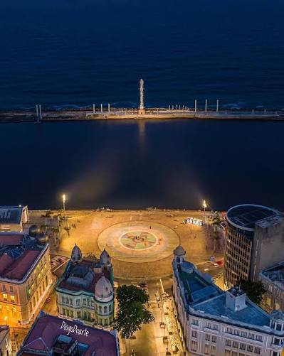

Praça do Marco Zero (Praça Rio Branco)

A Praça Mauá, popularmente conhecida como Marco Zero, é um dos espaços públicos mais importantes e vibrantes da cidade do Recife.
O que você vai encontrar por lá:
- O Painel de Cícero Dias: No centro da praça, há uma enorme rosa dos ventos colorida pintada pelo famoso artista plástico pernambucano.
- Parque das Esculturas Francisco Brennand: Logo em frente à praça, do outro lado do estuário, fica o famoso conjunto de esculturas que embeleza a paisagem local.
- Artesanato e Cultura: O local é cercado por antigos casarões históricos que hoje abrigam centros de artesanato, bares e museus.
Visitar o Marco Zero é um passeio obrigatório para quem quer sentir a verdadeira energia da cultura pernambucana, ver o encontro do rio com o mar e tirar fotos incríveis.
Quer conhecer mais lugares? Clique aqui para ver outros pontos turísticos do Recife Antigo!